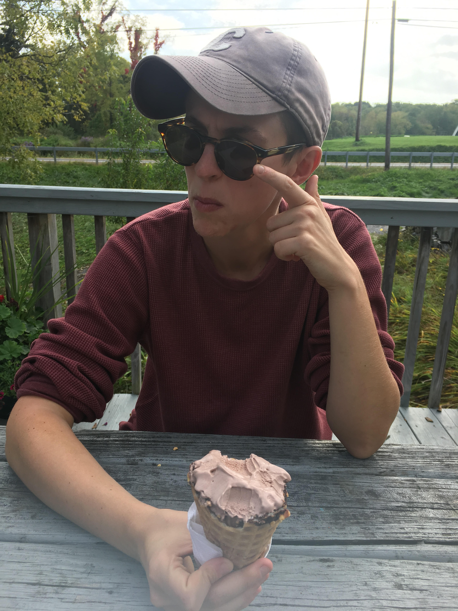

|
440 Gates Hall
|

|
I am a first year Ph.D. student in Computer Science at Cornell University. I am broadly interested in the intersection between distributed systems and machine learning. More specifically, my research focus is on designing techniques for building scalable machine learning systems and investigating how consistency, staleness, and other distributed computing considerations impact machine learning algorithms. I am very fortunate to be advised by Chris De Sa and Lorenzo Alvisi. Prior to attending Cornell, I worked for several years in industry. I graduated summa cum laude from Columbia University, where I studied Computer Science and Archaeology and was elected to Phi Beta Kappa.
I care very deeply about the impact of my work, specifically its legal and social implications. I am a member of Cornell's initiative on Artifical Intelligence, Policy, and Practice and am engaged in a variety of outreach and service programs in Computer Science mentorship and education.
In my free time, I am fully committed to perfecting the art of rolling fresh pasta. I am usually doing that, but if not you can find me reading, at the gym, learning Italian, or working on my practice of foolishness / being a menace.